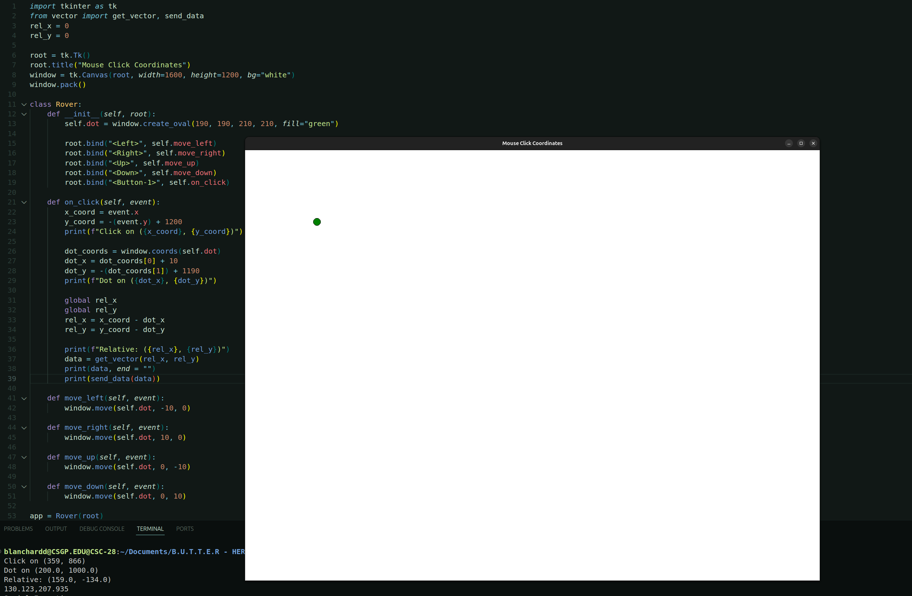
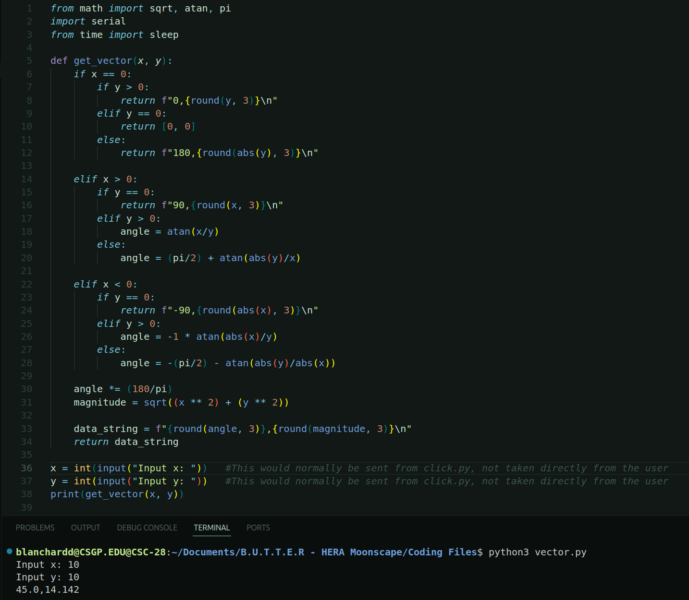
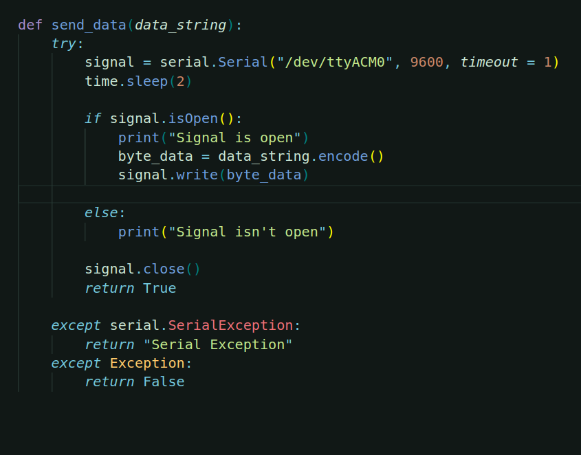
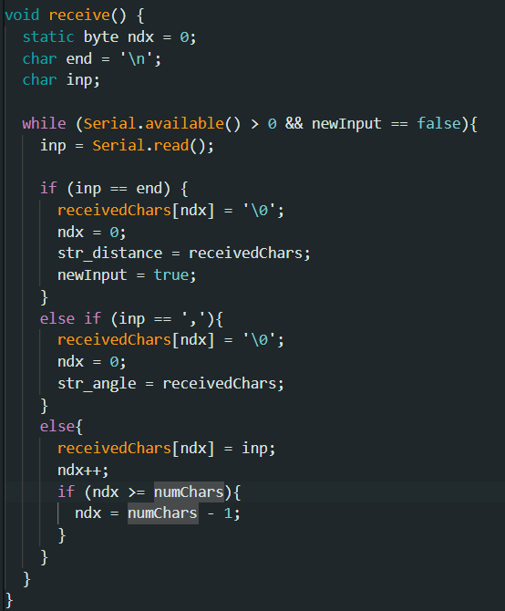
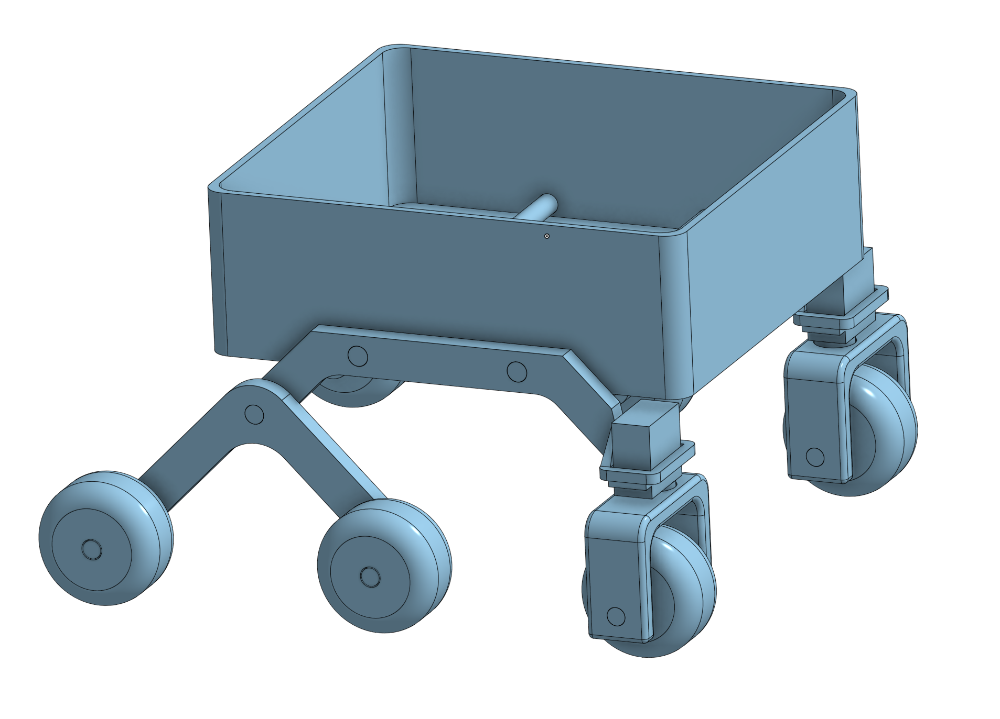
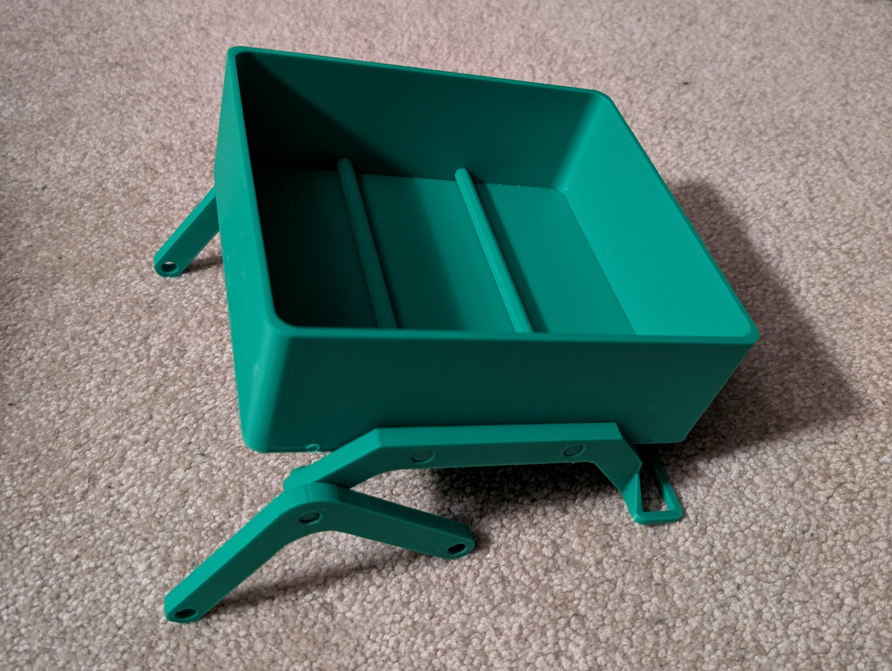
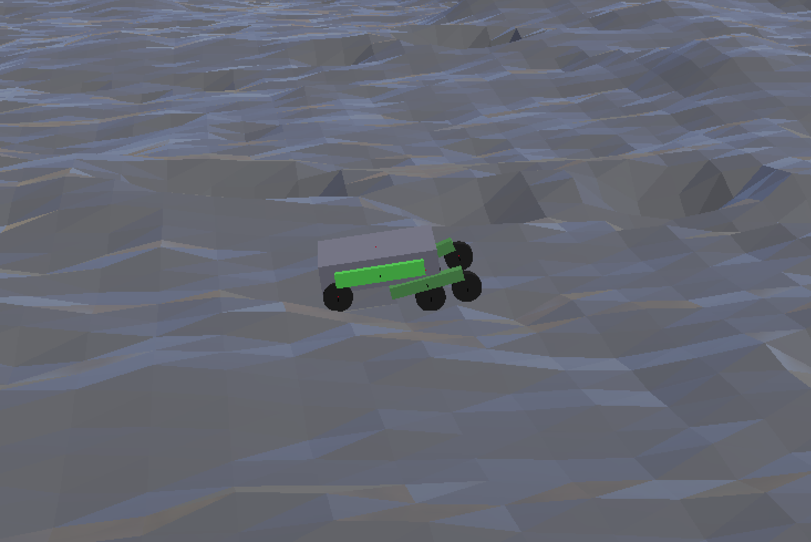
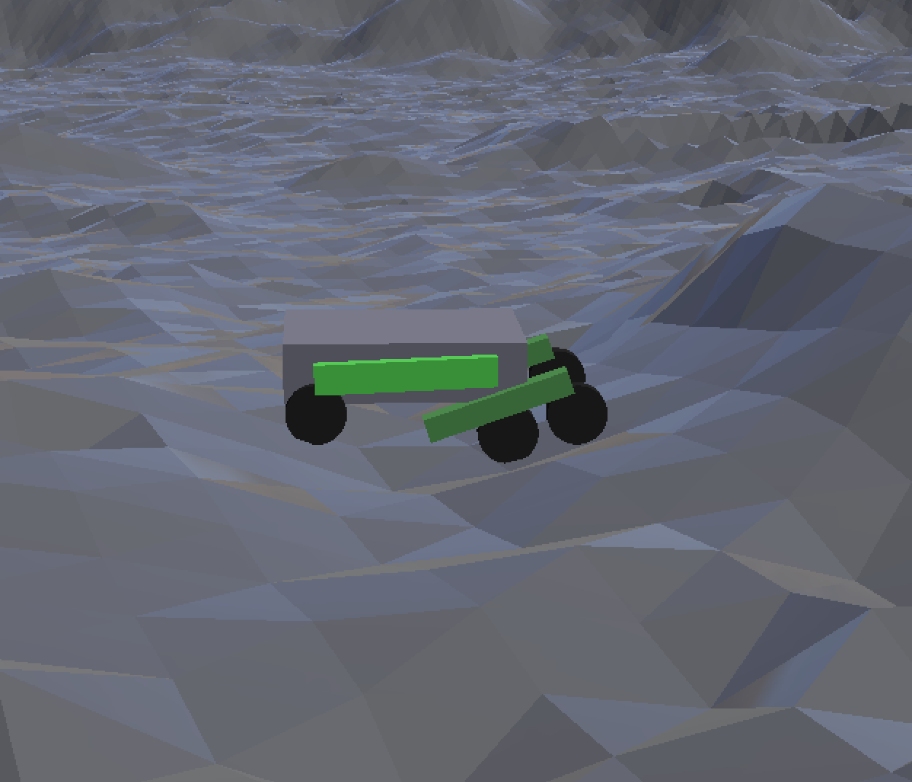

The rover prototype uses python and arduino coding in order to translate a click from the user into movement from the arduino.
The first step of this process is taking the input from the user. Our design uses the python library tkinter, allowing for the display of a window that can take inputs.
Once the click from the user has been taken and translated into relative coordinates, they're sent through the triangulation software. This takes those relative coordinates and changes them into an angle and a distance.
Since the arduino is the thing that controls the servos and motors, next that data is sent to the arduino. The python Serial library is used to do this, and the arduino interprets the data.
 The rover prototype uses:
Our design uses a rocker-bogie suspension system with a hollow body that we use to store the electronics. The front has slots for the servos to go, which will also attach to the wheels, allowing them to turn.
Here's what our 3D printed body looks like after being printed out without any electronics attached.
In order to test our rover design in a varied amount of environments we decided to use a simulation. This allows us to test without using unnecessary resources building difficult landscapes, and test things that wouldn't be feasible in a normal environment such as different gravities.
Example of how Rocker Bogie suspension system handles bumps and rough terrain
